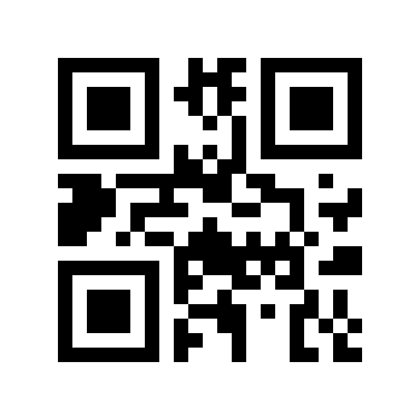
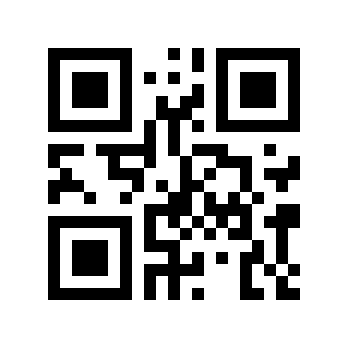

For science!
For science!
Five flips
What is the smallest number of squares you can flip — black to white and/or white to black — to make a scanner read a Version 1 QR code as something else entirely?
The answer is five. Flip five squares in a code for
https://x.com and scanners read it as https://8.com.
Try it with your phone:

https://x.comThis is the original QR code, altered in as few squares as possible. The altered pattern usually isn’t a valid code at all — its squares don’t satisfy the code’s own rules, so no encoder would ever print it. It works because it lands close enough to a different valid code: the scanner treats the mismatches as damage, corrects them, and reads out that other code’s content instead.
We computed the exact minimum for all four error-correction levels of Version 1 — not by sampling, but by exhaustive enumeration of every candidate pattern, so the counts below are complete. At level L, five is the theoretical floor — and of the roughly 398 million minimum-weight difference codewords, only 595 achieve it:
| Error-correction level | Minimum flips | Difference codewords achieving it |
|---|---|---|
| L | 5 | 595 |
| M | 6 | 705 |
| Q | 8 | 7 |
| H | 12 | 7* |
* H’s seven: four of symbol weight 18, two of 19, and one of 20.
Why these numbers are exact
- There is a floor. A bounded-distance decoder can correct a pattern that is a few codewords from a valid code, and any two valid codes differ in at least a fixed number of codewords — so a successful flip pattern has to bridge most of that gap. That gives a lower bound at each level: 5, 6, 8, 10.
- The floor is a lower bound, and at H it is not attainable. L, M and Q reach their floors exactly. H does not: no 10- or 11-flip pattern exists, and 12 is the minimum. That was the surprise in the table.
- Everything is checked twice. The enumeration was verified independently with two separate decoders, and the example above was scanned end-to-end. The programs and the full result lists are published with the paper, so anyone can re-run the count.
As far as we have been able to find, these minima and counts have not been published before; earlier work estimated higher numbers from testing. The full paper explains the model, the proof, and how it relates to what came before.
Only got a marker pen?
The counts above let you flip a square either way. A marker pen can only
darken — and on the x.com code at the top of this page, three of the five
squares are already black, so a pen alone can’t do that one. But the
minimum doesn’t move: it is still five squares at level L (and 6, 8 and
12 at the other levels), because for the right starting code, every square you
need is white to begin with. The same five squares prove it one letter along:
on https://x.ax they are all white — blacken just those five,
and the code scans as https://8.ax.

https://x.ax as printed (left), and with five squares
darkened by a marker (right) — it scans as https://8.ax.